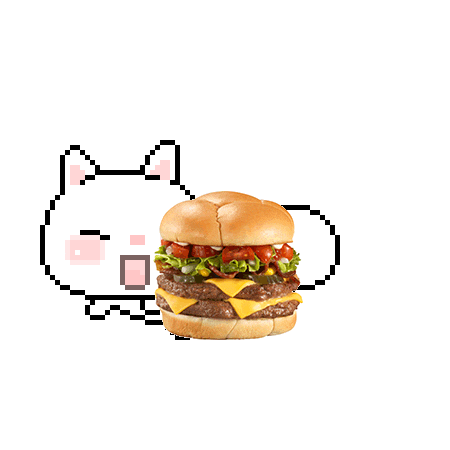

ALL ABOUT CATS
Get to know more about cats..

Cats, kitties, fluffies, or whatever you call your feline best friend, all belong to the Felidae family. Although, they are the only group that is domesticated. Hence their other name, the domestic cat.
These beloved pets live in homes around the world. Some like to be spoiled and require a lot of attention and care to meet their needs. Where others are more independent – wandering in and out of their human homes as they please..

Where do they live?
What do they eat?

Cats are carnivores, meaning they eat meat. Those who hunt, be they pets or wild cats, mostly hunt smaller animals like birds and vermin. However, many pet kitties receive meals from their humans which could be in the form of wet or dry food. The most important thing to remember is that their food needs to be balanced and nutrient-rich.
Like all other mammals, they reproduce sexually. Once a female is impregnated by a male she is pregnant between 62 and 67 days. Whereafter she gives birth to a litter between 2 and 5 kittens